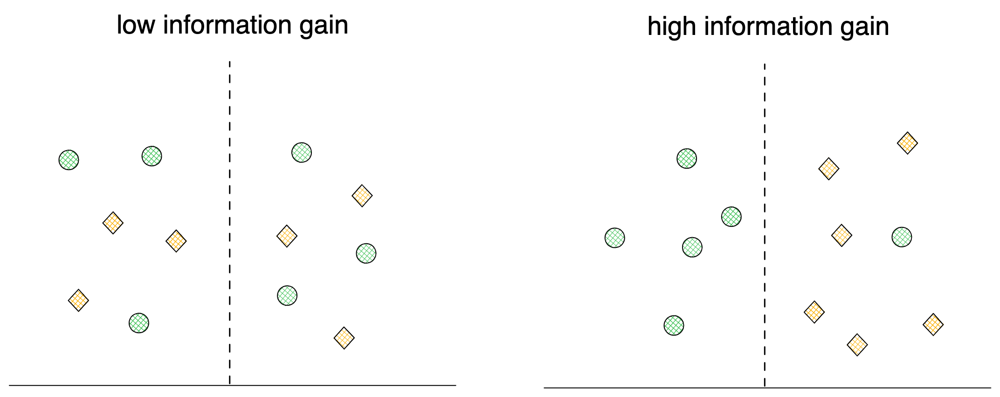

Decision Trees
A non-parametric supervised learning method. Decision tree tries to predict the target variable with tree of simple decision rules. It is used for both Regression and Classification.
Why Decision Trees ?
- Easy to interpret
- Supports categorical and continuous features
Tree
Tree is an abstract idea to store information i.e an abstact data type. It symbolizes a hierarchial graph that contains parent and child nodes, where a parent node can have multiple child nodes but a child node has only one parent node. The tree starts at a root node which does not have any parent node and end at leaf nodes, which do not have any child nodes.
Tree can have more than 2 child nodes for a parent node, but for the purposes of computation and understanding the tree in decision tree is limited to 2 child nodes for every parent node (a.k.a Binary Tree)
Inner workings of Decision Tree
- Every node receives data in the form of {features, target}.
- We then as a question to a feature, the answer to which - splits this set into two.
- The question asked is determined by
Attribute Selection Measure- which is heuristic for measuring the understanding of the target given the split. - We start the root node with all of the training set.
- We end when we cannot split (due to all leaf nodes being pure or some condition by hyperparameters like maximum depth ) or have run out of features.
There are varations in types of decision tree algorithms, but generally they follow these steps
Attribute Selection Measures
These are metrics that measure the quality of a split.
Information Gain & Entropy
Information gain is based on entropy (from information theory)
Entropy
Entropy is defined as
\[E = -\sum_{i=1}^{J} p_i log_2 p_i\]
where
\(i\) is each class in a node
\(J\) is thetotal number of classes
\(p_i\) is the probablity of class \(i\) and Sum of \(p1, p2 … pJ\) equals to 1. Entropy ranges from 0 to 1.
Consider the following example.
if the split is at \( x = 2 \),
then entropy for the left branch i.e \( x < 2 \) is
\[ E = - (p_{square} log_2 p_{square} + p_{circle} log_2 p_{circle}) \\ = -( \frac{5}{7} log_2 \frac{5}{7} + \frac{2}{7} log_2 \frac{2}{7} ) \\ = 0.86 \]
Entropy for the left branch i.e \( x > 2 \) is
\[ E = - p_{circle} log_2 p_{circle} \\ = - \frac{5}{5} log_2 \frac{5}{5} \\ = 0 \]
Information Gain
Information Gain is defined as
\[ IG = E(before) - \sum_{i=1}^J E(i, after) \]
Split are made to maximize information gain.
For the example above,
\[ E(before) = - (p_{square} log_2 p_{square} + p_{circle} log_2 p_{circle}) \\ = -( \frac{5}{12} log_2 \frac{5}{12} + \frac{7}{12} log_2 \frac{7}{12} ) \\ = 0.97 \]
\[ \sum_{i=1}^J E(i, after) = 0.86 + 0 \\ = 0.86 \]
\[ IG = 0.97 - 0.86 = 0.11 \]
here is another example :

Gini Impurity
Chances of being incorrect if randomly assigned a class (accounting class distribution). Gini Impurity is defined as
\[ G = 1 - \sum_{i=1}^J (p_i)^2 \]
where
\(i\) is each class in a node
\(J\) is the total number of classes
\(p_i\) is the probablity of class \(i\)
Gini impurity is the preferred because it doesn’t require logarithmic computation which is relatively more expensive. The tree produced by both methods tend to be similar. refer here
For example,
if the split is at \( x = 2 \),
then gini for the left branch i.e \( x < 2 \) is \[
G_{left} = 1 - (p_{square}^2 + p_{circle}^2) \\
= 1 - ( ({\frac{5}{7}})^2 + (\frac{2}{7})^2 ) \\
= 0.40
\]
then gini for the right branch i.e \( x > 2 \) is \[ G_{right} = 1 - ( p_{circle}^2) \\ = 0 \]
Similar to information gain, the split deciced by the maximum difference in the gini impurity (the amount of impurity removed: before split - after split ). It is also weighted by the number of elements in each splity.